Guía paso a paso — de Recepción al iPad de la enfermera
Esta guía muestra cómo enviar la hoja de enfermería GLP-1 desde la fila del paciente en
Recepción, y cómo la enfermera la llena, la guarda y la imprime desde el iPad. Las capturas son
de producción (CMR Bayamón, paciente de prueba bay1).
En el tablero de Centro de Pacientes, en la fila del servicio GLP-1 del paciente, toca Acciones y elige la hoja «Evaluación de adherencia al protocolo · Hoja de enfermería — toma de signos vitales y seguimiento».
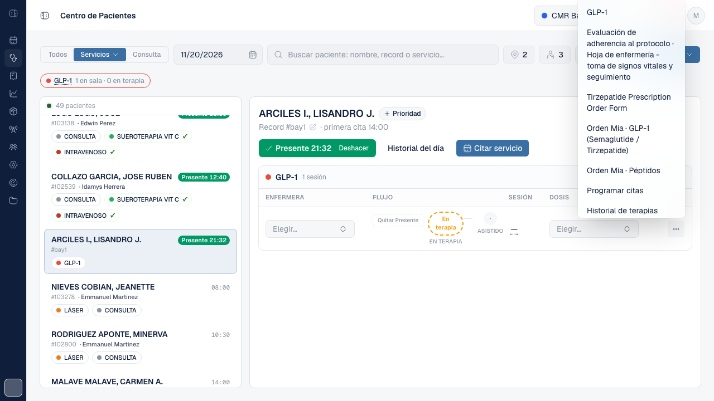
Se abre el modal Formatos de GLP-1 con tres botones: «Llenar en pantalla», «QR» y «Enviar al iPad», sobre la hoja imprimible de siempre.
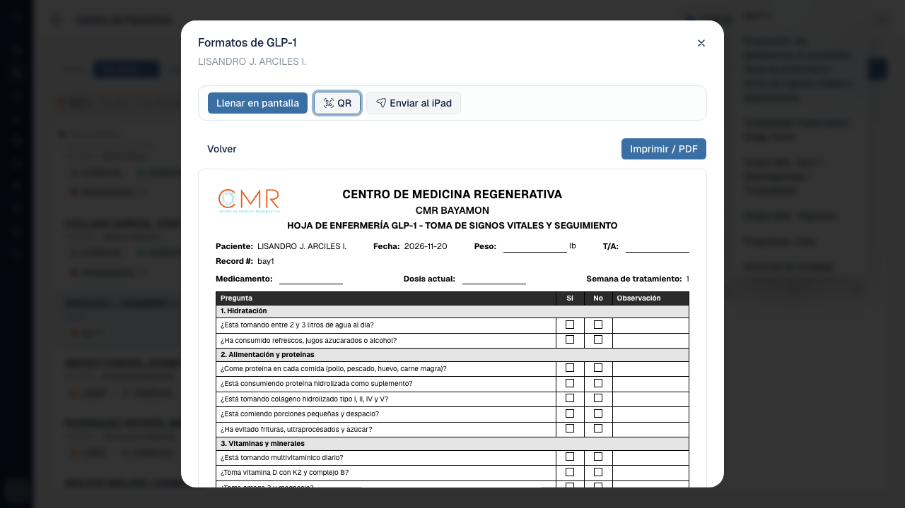
Si la enfermera tiene el iPad en mano, toca QR: apunta la cámara del iPad al código y toca el enlace que aparece para abrir la hoja directo.
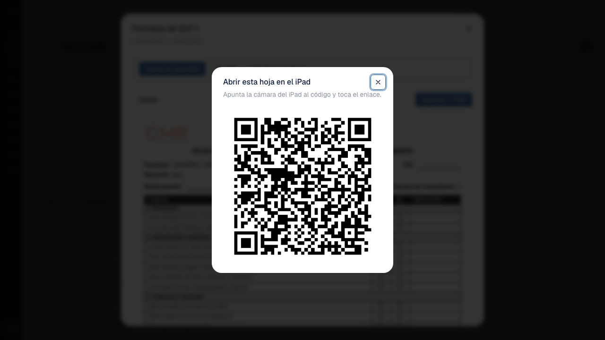
Toca Enviar al iPad, elige a la persona que tiene la sesión abierta en el iPad y toca Enviar. La hoja se abre sola en su pantalla.
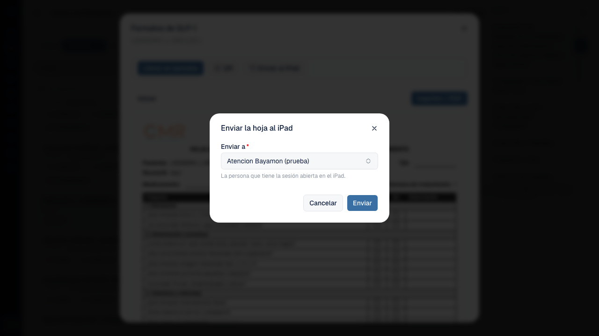
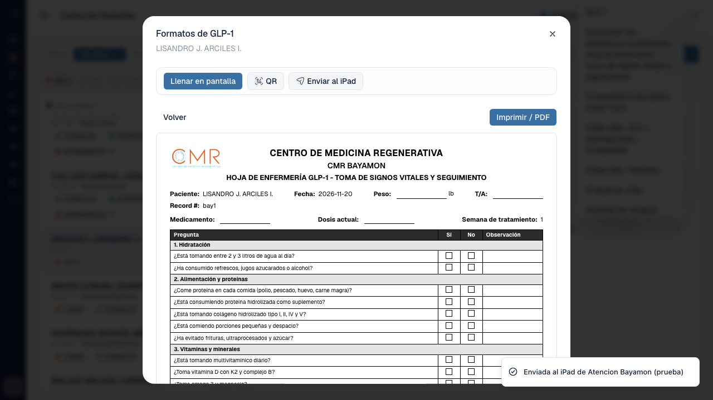
/forms/glp1_adherencia.
Usa la que tengas a mano.
En el iPad, la pantalla de inicio de GLP-1 lista las visitas del día: hora, paciente, récord y si ya está «Guardada» o «Pendiente». Se puede buscar por nombre o récord, o abrir la hoja con el QR de recepción.
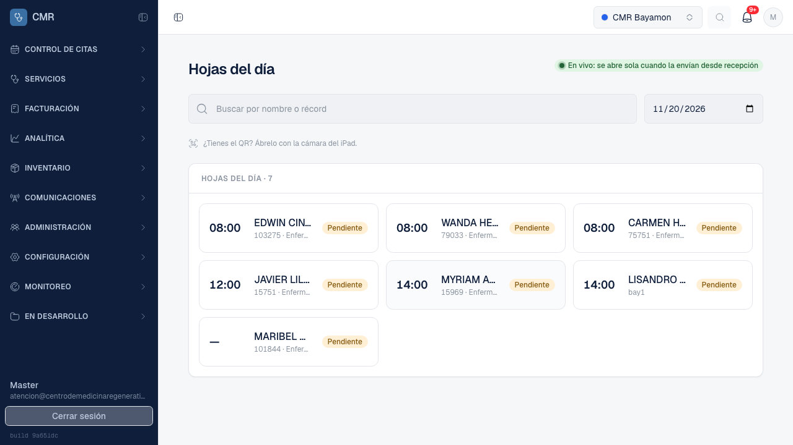
Al tocar una tarjeta de la lista (o al llegar por el QR o «Enviar al iPad»), se abre la hoja de ese paciente: nombre, récord y fecha arriba, y los campos de la visita debajo.
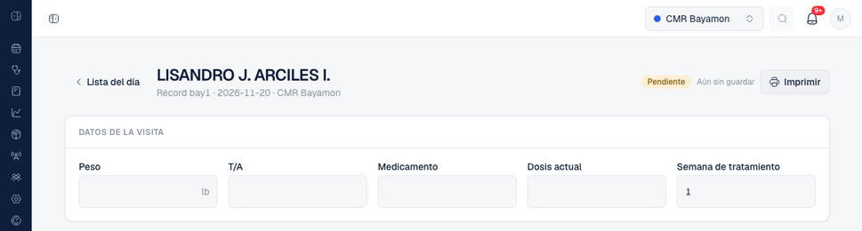
Se anota Peso, T/A, Medicamento y Dosis actual (la semana de tratamiento llega sola). Luego, cada pregunta del protocolo se responde con un toque en Sí o No; tocar la misma opción otra vez la borra. Cada pregunta tiene un campo de Observación opcional.
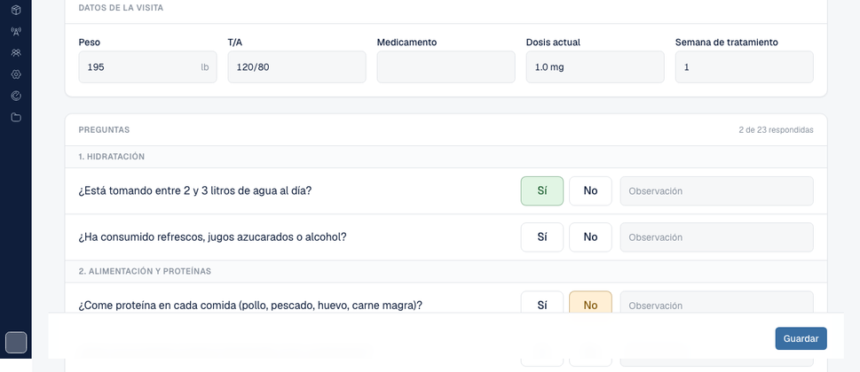
Al final de la hoja: Observaciones adicionales (texto libre), Enfermera (quién firma) y Fecha y hora del registro.
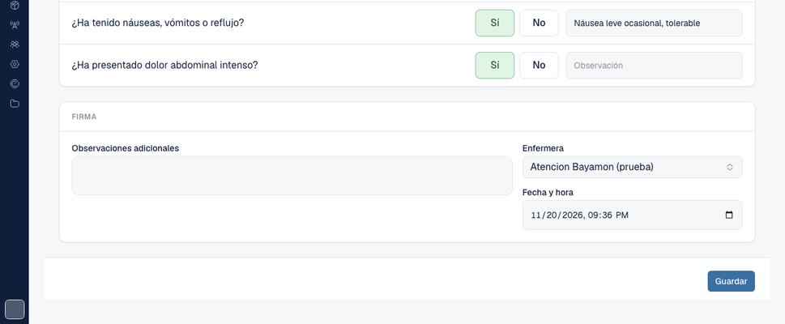
El botón Guardar, siempre visible abajo, graba toda la hoja de una vez. Al guardar, el estado cambia de «Pendiente» a «Guardada» con la fecha y hora.
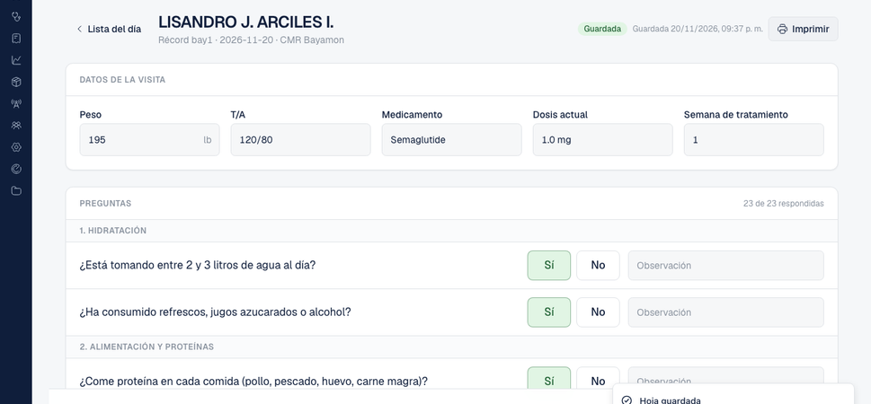
El botón Imprimir muestra la hoja tal como quedó guardada, igual al papel de siempre, lista para Imprimir / PDF.
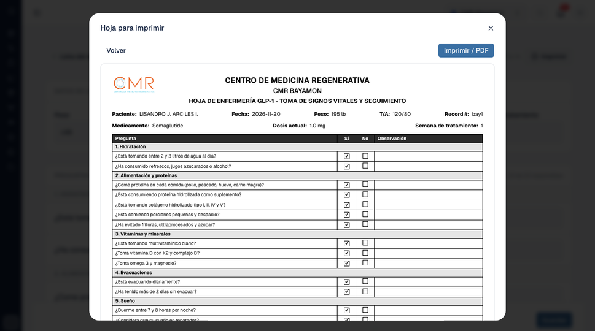